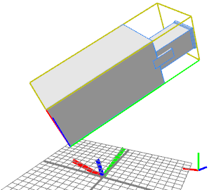
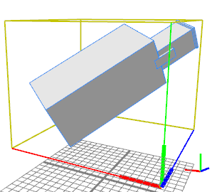
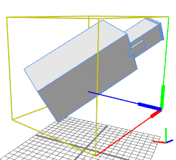

alignScopeToAxes operation
alignAxes selector
| x, y, z, world.x, world.y, world.z, world.xyz | The world coordinate axis/axes to align to. |
| object.x, object.y, object.z, object.xyz | The object coordinate axis/axes to align to. |
The alignScopeToAxes operation manipulates the scope, the pivot and the geometry attributes such that the scope's axes are parallel to the corresponding axis/axes selected with alignAxes selector. If no alignAxes selector is specified, then world.xyz is used. After this operation, the scope.r and the scope.t vectors are zero and the geometry is projected to the new scope (i.e. stays at the same place in world coordinates).
If alignAxes selects a single axis, the second axis is created as follows:
| world.x, object.x | The z axis is projected onto the world/object coordinates yz-plane. |
| world.y, object.y | The x axis is projected to the world/object coordinates xz-plane. |
| world.z, object.z | The x axis is then projected to the world coordinates xy-plane. |
The third axis is created such that the axes form a right hand system.
Related
Examples

A-->
t(5,0,4) s(8,24,8) r(10,20,30)
i("boxnewsredlowress.obj")
The initial scene: The pivot (fat) is in the origin; the scope (yellow) contains a translation and a rotation.

A-->
t(5,0,4) s(8,24,8) r(10,20,30)
i("boxnewsredlowress.obj")
alignScopeToAxes()
Applying alignScopeToAxes removes the scope translation and rotation, rotates the pivot such that all pivot axes are parallel to the world coordinate axes and projects the geometry to the new scope such that it stays at the same place in world coordinates. Note that the pivot lies at a corner of the bounding box (which is the new scope).

A-->
t(5,0,4) s(8,24,8) r(10,20,30)
i("boxnewsredlowress.obj")
alignScopeToAxes(y)
Using the y-axis variant only aligns the pivot to the y-axis.